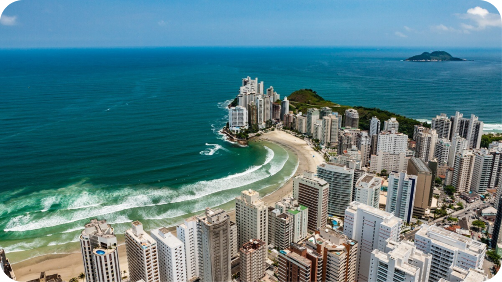

Conheça mais sobre
Guarujá é um dos destinos mais queridos do litoral sul paulista. Só no Réveillon, a cidade do litoral sul paulista recebe cerca de 1,5 milhão de pessoas.

Principais Aspectos de Guarujá:
Muita gente não sabe, mas o município ocupa inteiramente a Ilha de Santo Amaro, que é a terceira maior ilha do litoral paulista, perdendo apenas para Ilhabela e Ilha Comprida. A condição insular moldou o desenvolvimento da cidade e ainda influencia aspectos como transporte, urbanização e proteção ambiental.

Principais Aspectos de Guarujá: Muita gente não sabe, mas o município ocupa inteiramente a Ilha de Santo Amaro, que é a terceira maior ilha do litoral paulista, perdendo apenas para Ilhabela e Ilha Comprida. A condição insular moldou o desenvolvimento da cidade e ainda influencia aspectos como transporte, urbanização e proteção ambiental.
Clique aqui para voltar para a página principal:

SITES FEITOS POR HEITOR SANTIAGO, LUIZ EDUARDO, PEDRO HENRIQUE ROCHAS
menção honrosa: Pedro Buriti